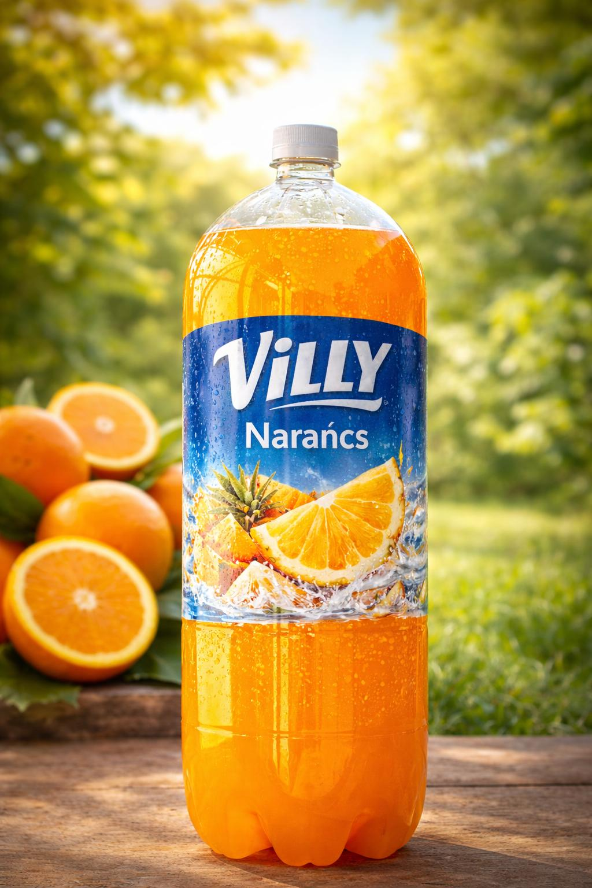
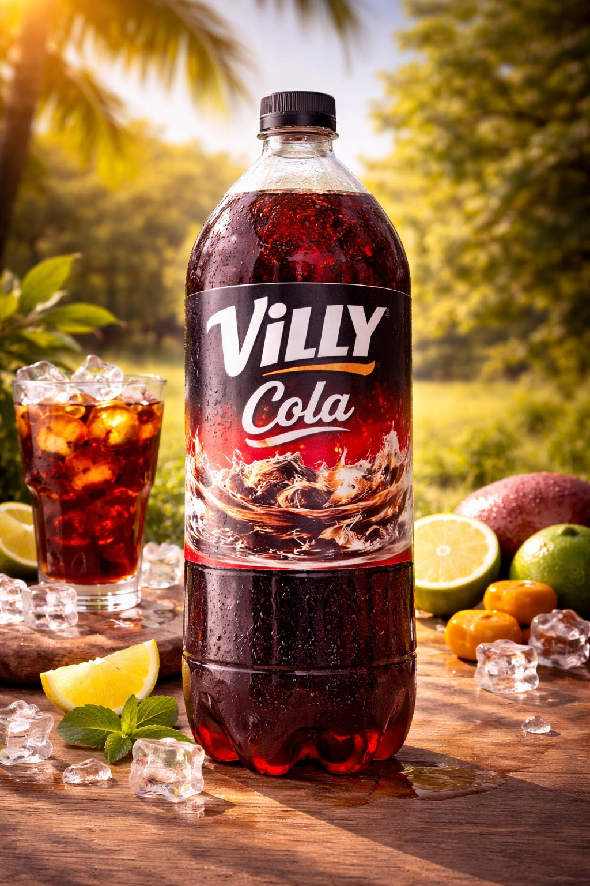
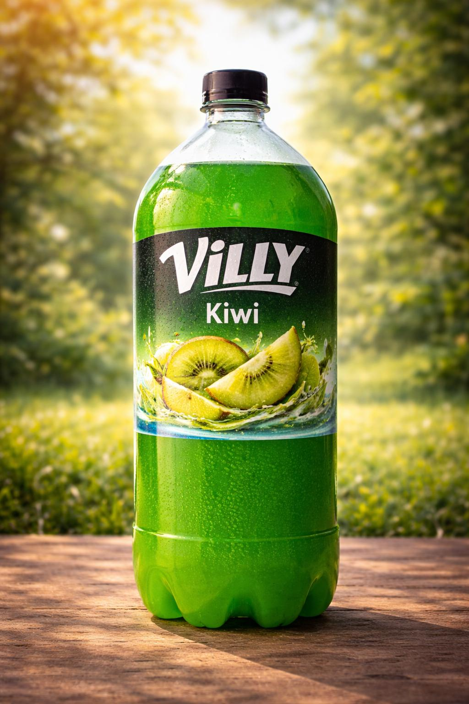
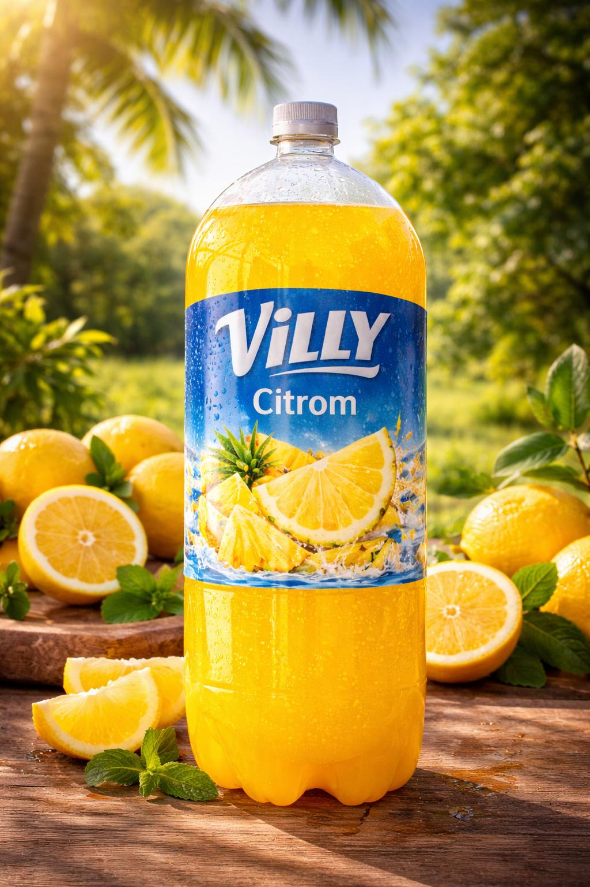
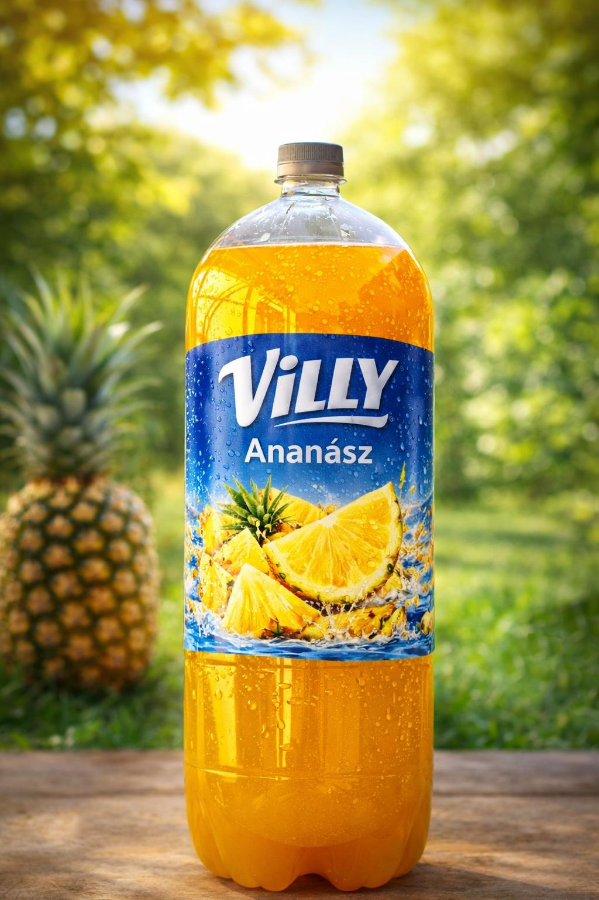
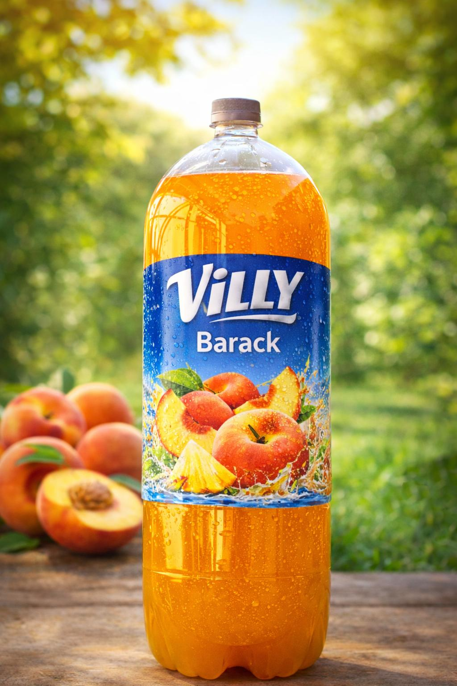
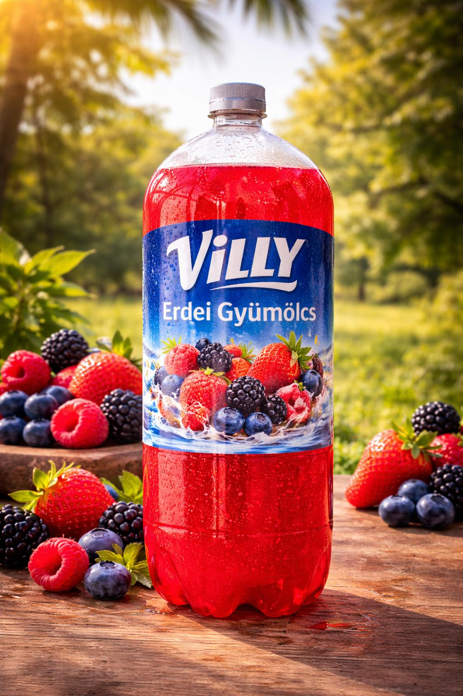
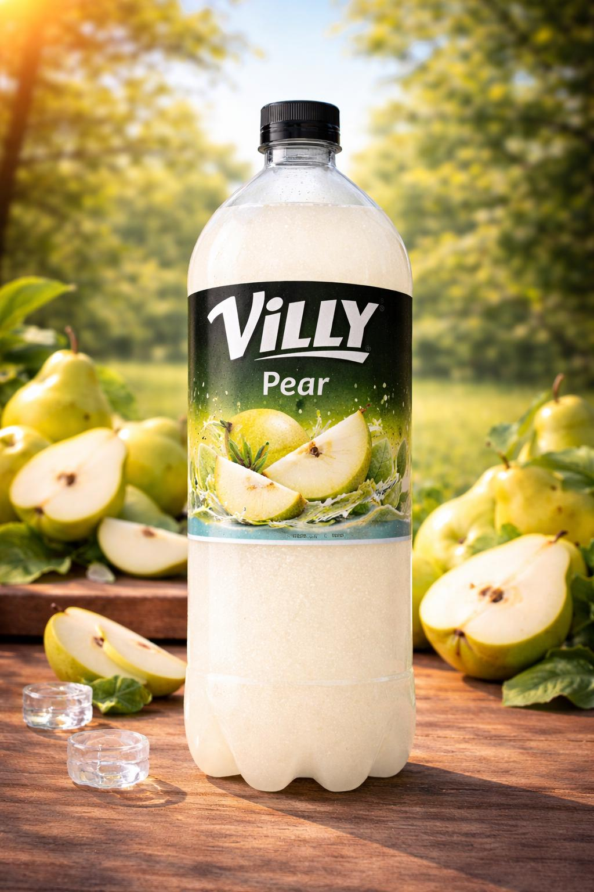
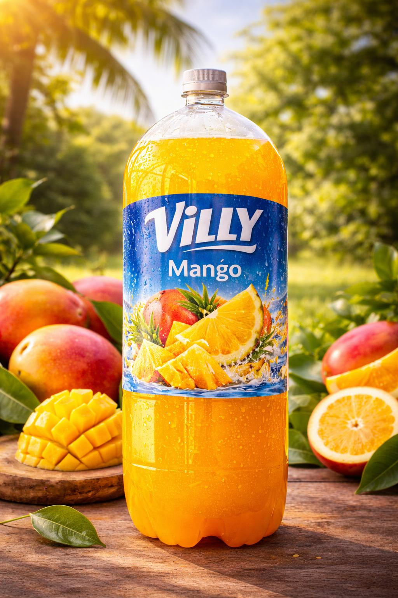
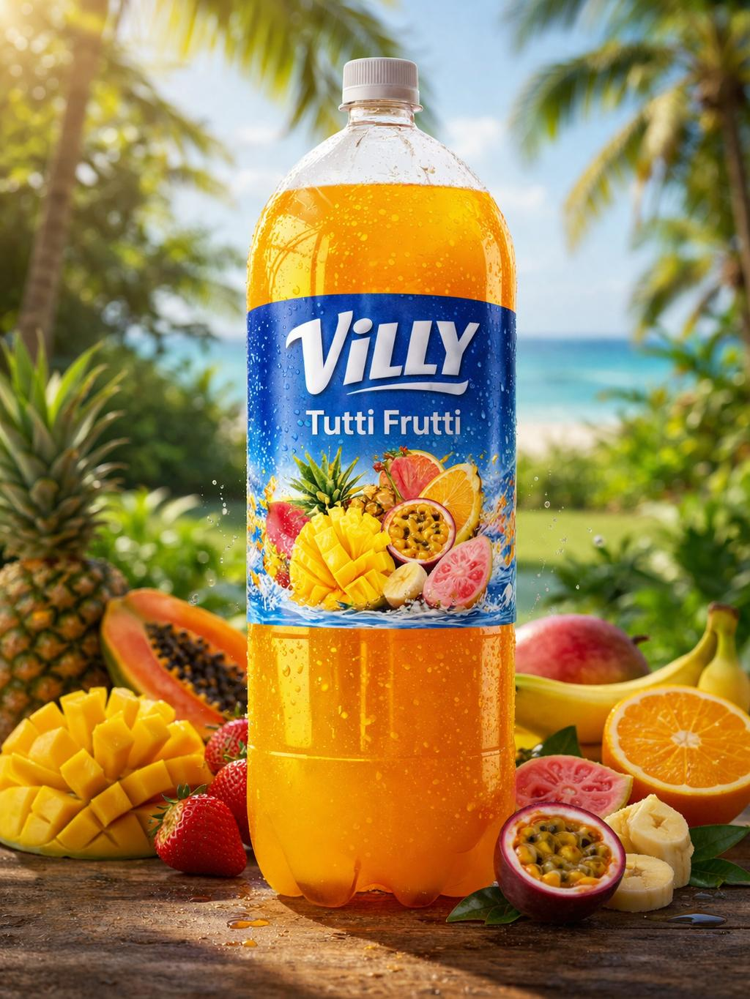

Villy üdítőkRăcoritoare Villy
A Villy márkanév alatt többféle ízben készítünk szénsavas üdítőitalokat. Kínálatunkban kóla, narancs, citrom, körte, barack, kiwi, erdei gyümölcs, bodza, ananász, tutti-frutti, tonic, mangó és eper-banán ízű üdítők is megtalálhatók.Sub marca Villy producem băuturi răcoritoare carbogazoase cu diverse arome. Gama noastră include cola, portocală, lămâie, pară, piersică, kiwi, fructe de pădure, soc, ananas, tutti-frutti, tonic, mango și căpșuni-banane.
Elérhető kiszerelések:Ambalaje disponibile:
0,5 L · 2 L · 3 L · 3,05 L









